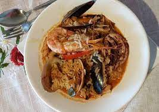
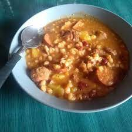

LA RECETA EN CUESTION ES CHARQUICAN UNA DELICIA CULINARIA QUE DA DE QUE HABLAR

par ver la receta de charquican ingrese al siguiente link Abrir enlace en una nueva ventana
EN LA PRIMERA RECETA SE VERA UNA COMIDA TIPICA DE ARGENTINA Y CHILE
LA RECETA EN CUESTION ES CHARQUICAN UNA DELICIA CULINARIA QUE DA DE QUE HABLAR
par ver la receta de charquican ingrese al siguiente link
Abrir enlace en una nueva ventana
LAS EMPANADAS SIEMPRE SON UNA OPCION IDEAL PARA UNA PICADA, PARA CUANDO UNO SALE O
O CUANDO PINTA EL BAJON, PERO UNA NUNCA ES SUFICIENTE, ALGUNA VEZ PROBASTE LA EMP-
ANADA TIPICA DE CHILE?, A MUCHOS LE GUSTAN FRITAAS O AL HORNO, PERO TODOS NOS QUE-
DAMOS CON HAMBRE, PERO UNA DE ESTAS O DOS Y QUEDAS LLENO

par ver la receta de EMPANADAS ingrese al siguiente link
Abrir enlace en una nueva ventana
LA CASUELA DE MARISCOS ES DIFERENTE A LA PAELLA, UNO ES MAS SOPA Y EL OTRO UN SALTEADO
PERO LA CAZUELA NO SE QUEDA ATRAS, SI ALGUNA VEZ COMISTE Y NO TIENE TODO LO QUE TE DICE
LA RECETA COMISTE SOPA PERO NO CASUELA. ESTA RECETA SE SUELE HACER EN LOS MUELLES DE CHILE
DONDE SE MESCLAN LOS MARISCOS FRESCOS QUE FUERON PESCADOS CON ANTERIORIDAD, TAMBIEN SE TOMA
EN EL MAR POR LOS NUTTRIENTES Y VITAMINAS QUE APORTA

par ver la receta de CASUELA DE MARISCOS ingrese al siguiente link
Abrir enlace en una nueva ventana
LA SOPA DE MANI ES UN PLATO TIPICO DE LUGARES COMO BOLIVIA CON UN ORIGEN EN LOS PUEBLOS
ORIGINARIOS LOS CUALES SON LA BASE DE MUCHAS DE LAS COMIDAS DE HOY EN DIA EN LATINOAMERICA

par ver la receta de SOPA DE MANI ingrese al siguiente link
Abrir enlace en una nueva ventana
LOS TACOS SON UNA COMIDA TIPICA DE MEXICO QUE SE EXPARSE SU POPULARIDAD POR EL RESTO DEL MUNDO
Y SE PREPARAN DE LA SIGUIENTE MANERA

par ver la receta de TACOS ingrese al siguiente link
Abrir enlace en una nueva ventana
EL POLLO A LA MOSTAZA SIN LUGAR A DUDA ES UNA DELICIA QUE SE SUELE HACER EN LAS JUNTAS DE AMIGOS
O EN MOMENTOS ALEGRES, NO POR SER MUY CARO, LA RAZON ES QUE SIEMPRE ES BUENO COMER ALGO RICO DE
DE ESTE CALIBRE EN MOMENTOS DE FESTEJO COMO PARA CERRAR CON LLAVE DE ORO UN BUEN MOMENTO, SI YA
PROBASTE Y NO TE GUSTO ES PORQUE NO LO COCINARON BIEN, NO APTO PARA PALADARES SENCIBLES, PERO CON
PEQUEÑAS MODIFICACIONES LO PUEDE COMER CUALQUIERA
par ver la receta de SOPA DE MANI ingrese al siguiente link
Abrir enlace en una nueva ventana
PASTEL DE CARNE, SIN LUGAR A DUDAS UNA DE LAS RECETAS TIPICAS DE NUESTRAS ABUELAS CON SUS DIFERENTES VERSIONES
A ALGUNOS LES GUSTA PONER FIANBRE POR FIERA Y A OTROS POR DENTRO, YO TE DOY LA RECETA FAMILIAR, ESA QUE SE HACIA
EN LAS FIESTAS Y CUMPLEANOS QUE MARCARON MI INFIANCIA
par ver la receta de PASTEL DE CARNE ingrese al siguiente link
Abrir enlace en una nueva ventana
UNA PASCUALINA SIEMPRE ES UN PLATO RICO Y SABROSO, YA SEA DE CARNE O POLLO O TAMBIEN DE JAMON Y QUESO, PERO AHORA
TE CUENTO COMO HACER UNO DE VERDURAS Y MERLUSA O CABALLA
par ver la receta de pascualina de caballa o merlusa ingrese al siguiente link
Abrir enlace en una nueva ventana
EL LOCRO ES SIN LUGAR A DUDAS UNA COMIDA QUE LOS ARGENTINOS TENEMOS TALLADA EN EL PECHO TANTO COMO EL ASADO
Y ACONTINUACION TE DIGO COMO SE HACE

par ver la receta de LOCRO ingrese al siguiente link
Abrir enlace en una nueva ventana
LA ilanesa a la napolitana con papas fritas y ensalada de tomate, cebolla y arvejas con arroz saborizado
ES SIN LUGAR A DUDAS UNA DELICIA QUE TENES QUE CONOCER

par ver la receta LA ilanesa a la napolitana con papas fritas y ensalada de tomate, cebolla y arvejas
con arroz saborizado de ingrese al siguiente link
Abrir enlace en una nueva ventana
PREPARAR SALSAS ES SUPER FACIL, SE PUEDE PICAR AJO Y PONERSELO A LA MAYONESA
TAMBIEN SE PUEDE HACER CON CEBOLLA DE VERDEO O CEBOLLA